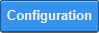
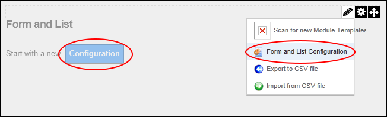
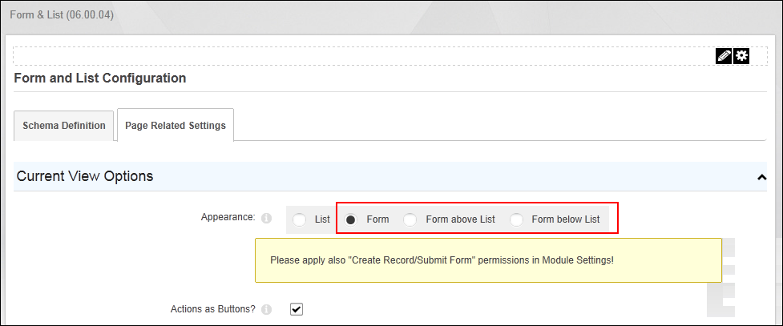
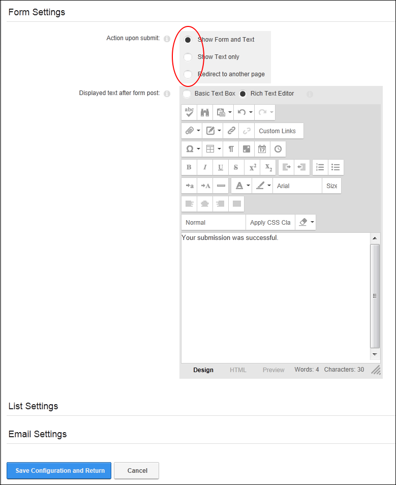
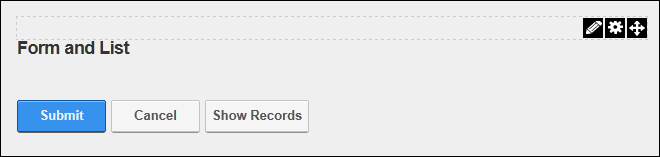

Configuring a Form
How to configure the Form and List module as a form. Note: Before configuration, the module displays the "Start with a new Configuration" message.
- Click the Configuration  button - OR - Select Edit
 >
>  Form and List Configuration from the module actions menu.
Form and List Configuration from the module actions menu.

- Select the Page Related Settings tab.
- Expand the Current View Options section.
- At Appearance, select from these options:
- Form: Select to display a form. Records entered into the form can be viewed using the Show Records option. See "Viewing Form Records"
This displays the following messages: "Please apply also "Create Record/Submit Form" permissions in Module Settings!", and "If the module is collecting confidential data, you should also exclude its data from system wide search." Skip to Step 2C. - Form Above List: Select to display a form with a list below. Records created using the form are displayed as a list below the form.
- Form Below List: Select to display a form with a list below. Records created using the form are displayed as a list above the form.
- At Actions as Buttons, to use buttons as well as the module action menu for actions such as "Add New Record" and "Show Records". This is the default setting for this field and is the recommended setting as it allows users who may not have access to view the module action menu, such as registered users, to add records and submit forms - OR - to only use the module action menu. In this case, you should test that the users you want to submit forms/add records are able to view the module action menu.

- Expand the Form Settings section and complete these optional settings. If these settings are not configured the default options are applied.
- At Action Upon Submit select from these options to set what happens once the form is submitted:
- Show Form and Text: Select to display both the form and the text entered into the below Editor on the page.
- Show Text only: Select to only display the text entered into the below Editor on the page.
- Redirect to another page: Select to redirect the user to any URL or a page on this site.
- At Redirect Upon Submit, set the redirection link. See "Setting a Page Link", See "Setting a URL Link" or See "Selecting an Existing URL Link". Skip to Step 5.
- In the Displayed text after form post Editor, enter the text to be displayed on form after is has been submitted. The default text is "Your submission was successful."

- Click the Save Configuration and Return button to return to the module. The module now displays Submit and Cancel buttons.

Tip: You can return to the Form and List Configuration page via the module actions menu and modify the Form Settings as desired, however the Appearance field should not be changed from a Form to a List.
You must now complete the following:
- Set the roles/users that can submit the form and view form results. See "Setting Form Permissions"
- Add one or more fields to your form. See "Creating a Form or List"